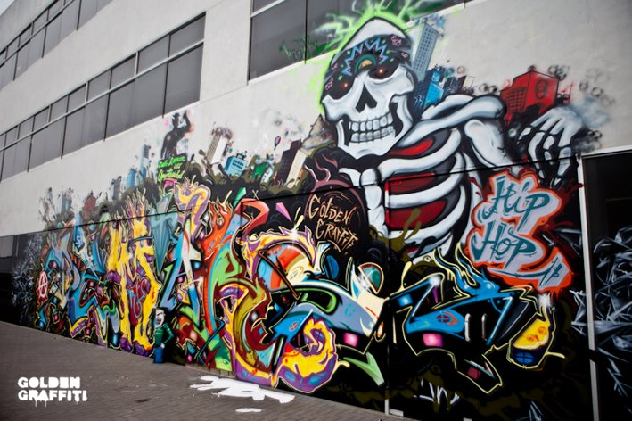

<!-- Crear una galería de imágenes que se pueda navegar hacia adelante y hacia atrás
haciendo clic en botones. -->

<button onclick="navegar('anterior')">Anterior</button>
<button onclick="navegar('siguiente')">Siguiente</button>

<script>
    var imagenes = ["media/g5.jpg", "media/g6.jpg", "media/g3.jpg", "media/g4.jpg"];
    var indice = 0;

    function navegar(direccion) {
        if (direccion === "anterior") {
            indice--;
            if (indice < 0) {
                indice = imagenes.length - 1;
            }
        } else if (direccion === "siguiente") {
            indice++;
            if (indice >= imagenes.length) {
                indice = 0;
            }
        }

        var imagen = document.getElementById("imagen");
        imagen.src = imagenes[indice]; // Cambia la imagen mostrada según el índice actual
    }
</script>